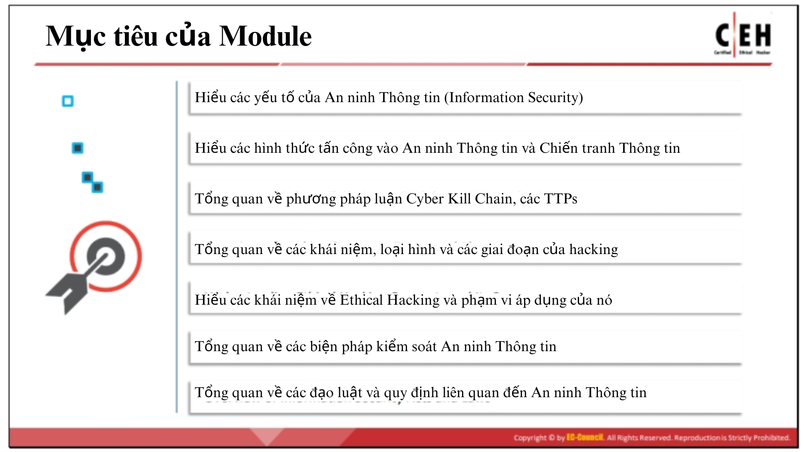

Học phần 1: Giới thiệu Ethical Hacking
-
Mục lục
- Chủ đề 1: Tổng quan về an ninh thông tin
- Chủ đề 2
- Chủ đề 3
- Chủ đề 4
- Chủ đề 5
Mục tiêu của học phần
Kẻ tấn công (attacker) xâm nhập vào hệ thống vì nhiều lý do và mục đích khác nhau. Do đó, điều quan trọng là phải hiểu cách mà các hacker độc hại (malicious hackers) tấn công và khai thác hệ thống, cũng như những động cơ có thể đứng sau các cuộc tấn công đó. Như Tôn Tử đã viết trong Binh pháp: “Biết người biết ta, trăm trận trăm thắng. Biết mình mà không biết người, đánh một thắng một bại.”
Các quản trị viên hệ thống và chuyên gia an ninh cần bảo vệ hạ tầng của mình khỏi các lỗ hổng bị khai thác bằng cách hiểu rõ kẻ thù—tức là các hacker độc hại—những kẻ tìm cách sử dụng chính hạ tầng đó cho các hoạt động phi pháp.
Module này bắt đầu bằng cái nhìn tổng quan về bối cảnh an ninh hiện tại và các hướng tấn công (threat vectors) mới nổi. Nội dung cung cấp cái nhìn chuyên sâu về các yếu tố khác nhau của An ninh Thông tin (Information Security). Tiếp theo, module thảo luận về các khái niệm liên quan đến hacking và ethical hacking, và kết thúc bằng phần trình bày ngắn gọn về các biện pháp kiểm soát an ninh thông tin cũng như các đạo luật và quy định liên quan.
-
Sau khi hoàn thành học phần này, bạn sẽ có thể:
- Mô tả các yếu tố cấu thành của An ninh Thông tin (Information Security)
- Giải thích các hình thức tấn công An ninh Thông tin và Chiến tranh Thông tin (Information Security Attacks và Information Warfare)
- Mô tả phương pháp luận Cyber Kill Chain, các TTPs (Tactics, Techniques, and Procedures – Chiến thuật, Kỹ thuật và Quy trình) và các IoCs (Indicators of Compromise – Chỉ báo bị xâm phạm)
- Trình bày các khái niệm, loại hình và các giai đoạn của hacking
- Giải thích các khái niệm về Ethical Hacking và phạm vi áp dụng
- Hiểu các biện pháp kiểm soát An ninh Thông tin (chẳng hạn như: phòng thủ nhiều lớp – defense-in-depth, quản lý rủi ro – risk management, tình báo mối đe dọa mạng – cyber threat intelligence, mô hình hóa mối đe dọa – threat modeling, quy trình xử lý sự cố – incident management process, và ứng dụng AI/ML trong bảo mật)
- Nắm được các đạo luật và quy định về An ninh Thông tin (Information Security Acts and Laws)